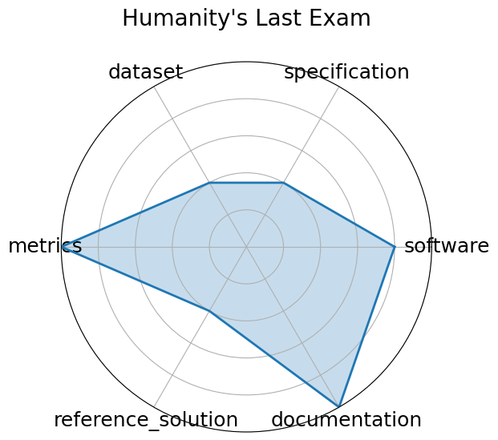

Humanity's Last Exam
Edit: edit this entry
Date: 2025-01-24
Name: Humanity's Last Exam
Domain: Multidomain
Focus: Broad cross-domain academic reasoning
Keywords: cross-domain, academic exam, multiple-choice, multidisciplinary
Task Types: Multiple choice
Metrics: Accuracy
Models: unkown
Citation:
-
Long Phan, Alice Gatti, Ziwen Han, Nathaniel Li, Josephina Hu, Hugh Zhang, Chen Bo Calvin Zhang, Mohamed Shaaban, John Ling, Sean Shi, Michael Choi, Anish Agrawal, Arnav Chopra, Adam Khoja, Ryan Kim, Richard Ren, Jason Hausenloy, Oliver Zhang, Mantas Mazeika, Dmitry Dodonov, Tung Nguyen, Jaeho Lee, Daron Anderson, Mikhail Doroshenko, Alun Cennyth Stokes, Mobeen Mahmood, Oleksandr Pokutnyi, Oleg Iskra, Jessica P. Wang, John-Clark Levin, Mstyslav Kazakov, Fiona Feng, Steven Y. Feng, Haoran Zhao, Michael Yu, Varun Gangal, Chelsea Zou, Zihan Wang, Serguei Popov, Robert Gerbicz, Geoff Galgon, Johannes Schmitt, Will Yeadon, Yongki Lee, Scott Sauers, Alvaro Sanchez, Fabian Giska, Marc Roth, Søren Riis, Saiteja Utpala, Noah Burns, Gashaw M. Goshu, Mohinder Maheshbhai Naiya, Chidozie Agu, Zachary Giboney, Antrell Cheatom, Francesco Fournier-Facio, Sarah-Jane Crowson, Lennart Finke, Zerui Cheng, Jennifer Zampese, Ryan G. Hoerr, Mark Nandor, Hyunwoo Park, Tim Gehrunger, Jiaqi Cai, Ben McCarty, Alexis C Garretson, Edwin Taylor, Damien Sileo, Qiuyu Ren, Usman Qazi, Lianghui Li, Jungbae Nam, John B. Wydallis, Pavel Arkhipov, Jack Wei Lun Shi, Aras Bacho, Chris G. Willcocks, Hangrui Cao, Sumeet Motwani, Emily de Oliveira Santos, Johannes Veith, Edward Vendrow, Doru Cojoc, Kengo Zenitani, Joshua Robinson, Longke Tang, Yuqi Li, Joshua Vendrow, Natanael Wildner Fraga, Vladyslav Kuchkin, Andrey Pupasov Maksimov, Pierre Marion, Denis Efremov, Jayson Lynch, Kaiqu Liang, Aleksandar Mikov, Andrew Gritsevskiy, Julien Guillod, Gözdenur Demir, Dakotah Martinez, Ben Pageler, Kevin Zhou, Saeed Soori, Ori Press, Henry Tang, Paolo Rissone, Sean R. Green, Lina Brüssel, Moon Twayana, Aymeric Dieuleveut, Joseph Marvin Imperial, Ameya Prabhu, Jinzhou Yang, Nick Crispino, Arun Rao, Dimitri Zvonkine, Gabriel Loiseau, Mikhail Kalinin, Marco Lukas, Ciprian Manolescu, Nate Stambaugh, Subrata Mishra, Tad Hogg, Carlo Bosio, Brian P Coppola, Julian Salazar, Jaehyeok Jin, Rafael Sayous, Stefan Ivanov, Philippe Schwaller, Shaipranesh Senthilkuma, Andres M Bran, Andres Algaba, Kelsey Van den Houte, Lynn Van Der Sypt, Brecht Verbeken, David Noever, Alexei Kopylov, Benjamin Myklebust, Bikun Li, Lisa Schut, Evgenii Zheltonozhskii, Qiaochu Yuan, Derek Lim, Richard Stanley, Tong Yang, John Maar, Julian Wykowski, Martí Oller, Anmol Sahu, Cesare Giulio Ardito, Yuzheng Hu, Ariel Ghislain Kemogne Kamdoum, Alvin Jin, Tobias Garcia Vilchis, Yuexuan Zu, Martin Lackner, James Koppel, Gongbo Sun, Daniil S. Antonenko, Steffi Chern, Bingchen Zhao, Pierrot Arsene, Joseph M Cavanagh, Daofeng Li, Jiawei Shen, Donato Crisostomi, Wenjin Zhang, Ali Dehghan, Sergey Ivanov, David Perrella, Nurdin Kaparov, Allen Zang, Ilia Sucholutsky, Arina Kharlamova, Daniil Orel, Vladislav Poritski, Shalev Ben-David, Zachary Berger, Parker Whitfill, Michael Foster, Daniel Munro, Linh Ho, Shankar Sivarajan, Dan Bar Hava, Aleksey Kuchkin, David Holmes, Alexandra Rodriguez-Romero, Frank Sommerhage, Anji Zhang, Richard Moat, Keith Schneider, Zakayo Kazibwe, Don Clarke, Dae Hyun Kim, Felipe Meneguitti Dias, Sara Fish, Veit Elser, Tobias Kreiman, Victor Efren Guadarrama Vilchis, Immo Klose, Ujjwala Anantheswaran, Adam Zweiger, Kaivalya Rawal, Jeffery Li, Jeremy Nguyen, Nicolas Daans, Haline Heidinger, Maksim Radionov, Václav Rozhoň, Vincent Ginis, Christian Stump, Niv Cohen, Rafał Poświata, Josef Tkadlec, Alan Goldfarb, Chenguang Wang, Piotr Padlewski, Stanislaw Barzowski, Kyle Montgomery, Ryan Stendall, Jamie Tucker-Foltz, Jack Stade, T. Ryan Rogers, Tom Goertzen, Declan Grabb, Abhishek Shukla, Alan Givré, John Arnold Ambay, Archan Sen, Muhammad Fayez Aziz, Mark H Inlow, Hao He, Ling Zhang, Younesse Kaddar, Ivar Ängquist, Yanxu Chen, Harrison K Wang, Kalyan Ramakrishnan, Elliott Thornley, Antonio Terpin, Hailey Schoelkopf, Eric Zheng, Avishy Carmi, Ethan D. L. Brown, Kelin Zhu, Max Bartolo, Richard Wheeler, Martin Stehberger, Peter Bradshaw, JP Heimonen, Kaustubh Sridhar, Ido Akov, Jennifer Sandlin, Yury Makarychev, Joanna Tam, Hieu Hoang, David M. Cunningham, Vladimir Goryachev, Demosthenes Patramanis, Michael Krause, Andrew Redenti, David Aldous, Jesyin Lai, Shannon Coleman, Jiangnan Xu, Sangwon Lee, Ilias Magoulas, Sandy Zhao, Ning Tang, Michael K. Cohen, Orr Paradise, Jan Hendrik Kirchner, Maksym Ovchynnikov, Jason O. Matos, Adithya Shenoy, Michael Wang, Yuzhou Nie, Anna Sztyber-Betley, Paolo Faraboschi, Robin Riblet, Jonathan Crozier, Shiv Halasyamani, Shreyas Verma, Prashant Joshi, Eli Meril, Ziqiao Ma, Jérémy Andréoletti, Raghav Singhal, Jacob Platnick, Volodymyr Nevirkovets, Luke Basler, Alexander Ivanov, Seri Khoury, Nils Gustafsson, Marco Piccardo, Hamid Mostaghimi, Qijia Chen, Virendra Singh, Tran Quoc Khánh, Paul Rosu, Hannah Szlyk, Zachary Brown, Himanshu Narayan, Aline Menezes, Jonathan Roberts, William Alley, Kunyang Sun, Arkil Patel, Max Lamparth, Anka Reuel, Linwei Xin, Hanmeng Xu, Jacob Loader, Freddie Martin, Zixuan Wang, Andrea Achilleos, Thomas Preu, Tomek Korbak, Ida Bosio, Fereshteh Kazemi, Ziye Chen, Biró Bálint, Eve J. Y. Lo, Jiaqi Wang, Maria Inês S. Nunes, Jeremiah Milbauer, M Saiful Bari, Zihao Wang, Behzad Ansarinejad, Yewen Sun, Stephane Durand, Hossam Elgnainy, Guillaume Douville, Daniel Tordera, George Balabanian, Hew Wolff, Lynna Kvistad, Hsiaoyun Milliron, Ahmad Sakor, Murat Eron, Andrew Favre D. O., Shailesh Shah, Xiaoxiang Zhou, Firuz Kamalov, Sherwin Abdoli, Tim Santens, Shaul Barkan, Allison Tee, Robin Zhang, Alessandro Tomasiello, G. Bruno De Luca, Shi-Zhuo Looi, Vinh-Kha Le, Noam Kolt, Jiayi Pan, Emma Rodman, Jacob Drori, Carl J Fossum, Niklas Muennighoff, Milind Jagota, Ronak Pradeep, Honglu Fan, Jonathan Eicher, Michael Chen, Kushal Thaman, William Merrill, Moritz Firsching, Carter Harris, Stefan Ciobâcă, Jason Gross, Rohan Pandey, Ilya Gusev, Adam Jones, Shashank Agnihotri, Pavel Zhelnov, Mohammadreza Mofayezi, Alexander Piperski, David K. Zhang, Kostiantyn Dobarskyi, Roman Leventov, Ignat Soroko, Joshua Duersch, Vage Taamazyan, Andrew Ho, Wenjie Ma, William Held, Ruicheng Xian, Armel Randy Zebaze, Mohanad Mohamed, Julian Noah Leser, Michelle X Yuan, Laila Yacar, Johannes Lengler, Katarzyna Olszewska, Claudio Di Fratta, Edson Oliveira, Joseph W. Jackson, Andy Zou, Muthu Chidambaram, Timothy Manik, Hector Haffenden, Dashiell Stander, Ali Dasouqi, Alexander Shen, Bita Golshani, David Stap, Egor Kretov, Mikalai Uzhou, Alina Borisovna Zhidkovskaya, Nick Winter, Miguel Orbegozo Rodriguez, Robert Lauff, Dustin Wehr, Colin Tang, Zaki Hossain, Shaun Phillips, Fortuna Samuele, Fredrik Ekström, Angela Hammon, Oam Patel, Faraz Farhidi, George Medley, Forough Mohammadzadeh, Madellene Peñaflor, Haile Kassahun, Alena Friedrich, Rayner Hernandez Perez, Daniel Pyda, Taom Sakal, Omkar Dhamane, Ali Khajegili Mirabadi, Eric Hallman, Kenchi Okutsu, Mike Battaglia, Mohammad Maghsoudimehrabani, Alon Amit, Dave Hulbert, Roberto Pereira, Simon Weber, Handoko, Anton Peristyy, Stephen Malina, Mustafa Mehkary, Rami Aly, Frank Reidegeld, Anna-Katharina Dick, Cary Friday, Mukhwinder Singh, Hassan Shapourian, Wanyoung Kim, Mariana Costa, Hubeyb Gurdogan, Harsh Kumar, Chiara Ceconello, Chao Zhuang, Haon Park, Micah Carroll, Andrew R. Tawfeek, Stefan Steinerberger, Daattavya Aggarwal, Michael Kirchhof, Linjie Dai, Evan Kim, Johan Ferret, Jainam Shah, Yuzhou Wang, Minghao Yan, Krzysztof Burdzy, Lixin Zhang, Antonio Franca, Diana T. Pham, Kang Yong Loh, Joshua Robinson, Abram Jackson, Paolo Giordano, Philipp Petersen, Adrian Cosma, Jesus Colino, Colin White, Jacob Votava, Vladimir Vinnikov, Ethan Delaney, Petr Spelda, Vit Stritecky, Syed M. Shahid, Jean-Christophe Mourrat, Lavr Vetoshkin, Koen Sponselee, Renas Bacho, Zheng-Xin Yong, Florencia de la Rosa, Nathan Cho, Xiuyu Li, Guillaume Malod, Orion Weller, Guglielmo Albani, Leon Lang, Julien Laurendeau, Dmitry Kazakov, Fatimah Adesanya, Julien Portier, Lawrence Hollom, Victor Souza, Yuchen Anna Zhou, Julien Degorre, Yiğit Yalin, Gbenga Daniel Obikoya, Rai, Filippo Bigi, M. C. Boscá, Oleg Shumar, Kaniuar Bacho, Gabriel Recchia, Mara Popescu, Nikita Shulga, Ngefor Mildred Tanwie, Thomas C. H. Lux, Ben Rank, Colin Ni, Matthew Brooks, Alesia Yakimchyk, Huanxu, Liu, Stefano Cavalleri, Olle Häggström, Emil Verkama, Joshua Newbould, Hans Gundlach, Leonor Brito-Santana, Brian Amaro, Vivek Vajipey, Rynaa Grover, Ting Wang, Yosi Kratish, Wen-Ding Li, Sivakanth Gopi, Andrea Caciolai, Christian Schroeder de Witt, Pablo Hernández-Cámara, Emanuele Rodolà, Jules Robins, Dominic Williamson, Vincent Cheng, Brad Raynor, Hao Qi, Ben Segev, Jingxuan Fan, Sarah Martinson, Erik Y. Wang, Kaylie Hausknecht, Michael P. Brenner, Mao Mao, Christoph Demian, Peyman Kassani, Xinyu Zhang, David Avagian, Eshawn Jessica Scipio, Alon Ragoler, Justin Tan, Blake Sims, Rebeka Plecnik, Aaron Kirtland, Omer Faruk Bodur, D. P. Shinde, Yan Carlos Leyva Labrador, Zahra Adoul, Mohamed Zekry, Ali Karakoc, Tania C. B. Santos, Samir Shamseldeen, Loukmane Karim, Anna Liakhovitskaia, Nate Resman, Nicholas Farina, Juan Carlos Gonzalez, Gabe Maayan, Earth Anderson, Rodrigo De Oliveira Pena, Elizabeth Kelley, Hodjat Mariji, Rasoul Pouriamanesh, Wentao Wu, Ross Finocchio, Ismail Alarab, Joshua Cole, Danyelle Ferreira, Bryan Johnson, Mohammad Safdari, Liangti Dai, Siriphan Arthornthurasuk, Isaac C. McAlister, Alejandro José Moyano, Alexey Pronin, Jing Fan, Angel Ramirez-Trinidad, Yana Malysheva, Daphiny Pottmaier, Omid Taheri, Stanley Stepanic, Samuel Perry, Luke Askew, Raúl Adrián Huerta Rodríguez, Ali M. R. Minissi, Ricardo Lorena, Krishnamurthy Iyer, Arshad Anil Fasiludeen, Ronald Clark, Josh Ducey, Matheus Piza, Maja Somrak, Eric Vergo, Juehang Qin, Benjámin Borbás, Eric Chu, Jack Lindsey, Antoine Jallon, I. M. J. McInnis, Evan Chen, Avi Semler, Luk Gloor, Tej Shah, Marc Carauleanu, Pascal Lauer, Tran Đuc Huy, Hossein Shahrtash, Emilien Duc, Lukas Lewark, Assaf Brown, Samuel Albanie, Brian Weber, Warren S. Vaz, Pierre Clavier, Yiyang Fan, Gabriel Poesia Reis e Silva, Long, Lian, Marcus Abramovitch, Xi Jiang, Sandra Mendoza, Murat Islam, Juan Gonzalez, Vasilios Mavroudis, Justin Xu, Pawan Kumar, Laxman Prasad Goswami, Daniel Bugas, Nasser Heydari, Ferenc Jeanplong, Thorben Jansen, Antonella Pinto, Archimedes Apronti, Abdallah Galal, Ng Ze-An, Ankit Singh, Tong Jiang, Joan of Arc Xavier, Kanu Priya Agarwal, Mohammed Berkani, Gang Zhang, Zhehang Du, Benedito Alves de Oliveira Junior, Dmitry Malishev, Nicolas Remy, Taylor D. Hartman, Tim Tarver, Stephen Mensah, Gautier Abou Loume, Wiktor Morak, Farzad Habibi, Sarah Hoback, Will Cai, Javier Gimenez, Roselynn Grace Montecillo, Jakub Łucki, Russell Campbell, Asankhaya Sharma, Khalida Meer, Shreen Gul, Daniel Espinosa Gonzalez, Xavier Alapont, Alex Hoover, Gunjan Chhablani, Freddie Vargus, Arunim Agarwal, Yibo Jiang, Deepakkumar Patil, David Outevsky, Kevin Joseph Scaria, Rajat Maheshwari, Abdelkader Dendane, Priti Shukla, Ashley Cartwright, Sergei Bogdanov, Niels Mündler, Sören Möller, Luca Arnaboldi, Kunvar Thaman, Muhammad Rehan Siddiqi, Prajvi Saxena, Himanshu Gupta, Tony Fruhauff, Glen Sherman, Mátyás Vincze, Siranut Usawasutsakorn, Dylan Ler, Anil Radhakrishnan, Innocent Enyekwe, Sk Md Salauddin, Jiang Muzhen, Aleksandr Maksapetyan, Vivien Rossbach, Chris Harjadi, Mohsen Bahaloohoreh, Claire Sparrow, Jasdeep Sidhu, Sam Ali, Song Bian, John Lai, Eric Singer, Justine Leon Uro, Greg Bateman, Mohamed Sayed, Ahmed Menshawy, Darling Duclosel, Dario Bezzi, Yashaswini Jain, Ashley Aaron, Murat Tiryakioglu, Sheeshram Siddh, Keith Krenek, Imad Ali Shah, Jun Jin, Scott Creighton, Denis Peskoff, Zienab EL-Wasif, Ragavendran P V, Michael Richmond, Joseph McGowan, Tejal Patwardhan, Hao-Yu Sun, Ting Sun, Nikola Zubić, Samuele Sala, Stephen Ebert, Jean Kaddour, Manuel Schottdorf, Dianzhuo Wang, Gerol Petruzella, Alex Meiburg, Tilen Medved, Ali ElSheikh, S Ashwin Hebbar, Lorenzo Vaquero, Xianjun Yang, Jason Poulos, Vilém Zouhar, Sergey Bogdanik, Mingfang Zhang, Jorge Sanz-Ros, David Anugraha, Yinwei Dai, Anh N. Nhu, Xue Wang, Ali Anil Demircali, Zhibai Jia, Yuyin Zhou, Juncheng Wu, Mike He, Nitin Chandok, Aarush Sinha, Gaoxiang Luo, Long Le, Mickaël Noyé, Michał Perełkiewicz, Ioannis Pantidis, Tianbo Qi, Soham Sachin Purohit, Letitia Parcalabescu, Thai-Hoa Nguyen, Genta Indra Winata, Edoardo M. Ponti, Hanchen Li, Kaustubh Dhole, Jongee Park, Dario Abbondanza, Yuanli Wang, Anupam Nayak, Diogo M. Caetano, Antonio A. W. L. Wong, Maria del Rio-Chanona, Dániel Kondor, Pieter Francois, Ed Chalstrey, Jakob Zsambok, Dan Hoyer, Jenny Reddish, Jakob Hauser, Francisco-Javier Rodrigo-Ginés, Suchandra Datta, Maxwell Shepherd, Thom Kamphuis, Qizheng Zhang, Hyunjun Kim, Ruiji Sun, Jianzhu Yao, Franck Dernoncourt, Satyapriya Krishna, Sina Rismanchian, Bonan Pu, Francesco Pinto, Yingheng Wang, Kumar Shridhar, Kalon J. Overholt, Glib Briia, Hieu Nguyen, David, Soler Bartomeu, Tony CY Pang, Adam Wecker, Yifan Xiong, Fanfei Li, Lukas S. Huber, Joshua Jaeger, Romano De Maddalena, Xing Han Lù, Yuhui Zhang, Claas Beger, Patrick Tser Jern Kon, Sean Li, Vivek Sanker, Ming Yin, Yihao Liang, Xinlu Zhang, Ankit Agrawal, Li S. Yifei, Zechen Zhang, Mu Cai, Yasin Sonmez, Costin Cozianu, Changhao Li, Alex Slen, Shoubin Yu, Hyun Kyu Park, Gabriele Sarti, Marcin Briański, Alessandro Stolfo, Truong An Nguyen, Mike Zhang, Yotam Perlitz, Jose Hernandez-Orallo, Runjia Li, Amin Shabani, Felix Juefei-Xu, Shikhar Dhingra, Orr Zohar, My Chiffon Nguyen, Alexander Pondaven, Abdurrahim Yilmaz, Xuandong Zhao, Chuanyang Jin, Muyan Jiang, Stefan Todoran, Xinyao Han, Jules Kreuer, Brian Rabern, Anna Plassart, Martino Maggetti, Luther Yap, Robert Geirhos, Jonathon Kean, Dingsu Wang, Sina Mollaei, Chenkai Sun, Yifan Yin, Shiqi Wang, Rui Li, Yaowen Chang, Anjiang Wei, Alice Bizeul, Xiaohan Wang, Alexandre Oliveira Arrais, Kushin Mukherjee, Jorge Chamorro-Padial, Jiachen Liu, Xingyu Qu, Junyi Guan, Adam Bouyamourn, Shuyu Wu, Martyna Plomecka, Junda Chen, Mengze Tang, Jiaqi Deng, Shreyas Subramanian, Haocheng Xi, Haoxuan Chen, Weizhi Zhang, Yinuo Ren, Haoqin Tu, Sejong Kim, Yushun Chen, Sara Vera Marjanović, Junwoo Ha, Grzegorz Luczyna, Jeff J. Ma, Zewen Shen, Dawn Song, Cedegao E. Zhang, Zhun Wang, Gaël Gendron, Yunze Xiao, Leo Smucker, Erica Weng, Kwok Hao Lee, Zhe Ye, Stefano Ermon, Ignacio D. Lopez-Miguel, Theo Knights, Anthony Gitter, Namkyu Park, Boyi Wei, Hongzheng Chen, Kunal Pai, Ahmed Elkhanany, Han Lin, Philipp D. Siedler, Jichao Fang, Ritwik Mishra, Károly Zsolnai-Fehér, Xilin Jiang, Shadab Khan, Jun Yuan, Rishab Kumar Jain, Xi Lin, Mike Peterson, Zhe Wang, Aditya Malusare, Maosen Tang, Isha Gupta, Ivan Fosin, Timothy Kang, Barbara Dworakowska, Kazuki Matsumoto, Guangyao Zheng, Gerben Sewuster, Jorge Pretel Villanueva, Ivan Rannev, Igor Chernyavsky, Jiale Chen, Deepayan Banik, Ben Racz, Wenchao Dong, Jianxin Wang, Laila Bashmal, Duarte V. Gonçalves, Wei Hu, Kaushik Bar, Ondrej Bohdal, Atharv Singh Patlan, Shehzaad Dhuliawala, Caroline Geirhos, Julien Wist, Yuval Kansal, Bingsen Chen, Kutay Tire, Atak Talay Yücel, Brandon Christof, Veerupaksh Singla, Zijian Song, Sanxing Chen, Jiaxin Ge, Kaustubh Ponkshe, Isaac Park, Tianneng Shi, Martin Q. Ma, Joshua Mak, Sherwin Lai, Antoine Moulin, Zhuo Cheng, Zhanda Zhu, Ziyi Zhang, Vaidehi Patil, Ketan Jha, Qiutong Men, Jiaxuan Wu, Tianchi Zhang, Bruno Hebling Vieira, Alham Fikri Aji, Jae-Won Chung, Mohammed Mahfoud, Ha Thi Hoang, Marc Sperzel, Wei Hao, Kristof Meding, Sihan Xu, Vassilis Kostakos, Davide Manini, Yueying Liu, Christopher Toukmaji, Jay Paek, Eunmi Yu, Arif Engin Demircali, Zhiyi Sun, Ivan Dewerpe, Hongsen Qin, Roman Pflugfelder, James Bailey, Johnathan Morris, Ville Heilala, Sybille Rosset, Zishun Yu, Peter E. Chen, Woongyeong Yeo, Eeshaan Jain, Ryan Yang, Sreekar Chigurupati, Julia Chernyavsky, Sai Prajwal Reddy, Subhashini Venugopalan, Hunar Batra, Core Francisco Park, Hieu Tran, Guilherme Maximiano, Genghan Zhang, Yizhuo Liang, Hu Shiyu, Rongwu Xu, Rui Pan, Siddharth Suresh, Ziqi Liu, Samaksh Gulati, Songyang Zhang, Peter Turchin, Christopher W. Bartlett, Christopher R. Scotese, Phuong M. Cao, Aakaash Nattanmai, Gordon McKellips, Anish Cheraku, Asim Suhail, Ethan Luo, Marvin Deng, Jason Luo, Ashley Zhang, Kavin Jindel, Jay Paek, Kasper Halevy, Allen Baranov, Michael Liu, Advaith Avadhanam, David Zhang, Vincent Cheng, Brad Ma, Evan Fu, Liam Do, Joshua Lass, Hubert Yang, Surya Sunkari, Vishruth Bharath, Violet Ai, James Leung, Rishit Agrawal, Alan Zhou, Kevin Chen, Tejas Kalpathi, Ziqi Xu, Gavin Wang, Tyler Xiao, Erik Maung, Sam Lee, Ryan Yang, Roy Yue, Ben Zhao, Julia Yoon, Sunny Sun, Aryan Singh, Ethan Luo, Clark Peng, Tyler Osbey, Taozhi Wang, Daryl Echeazu, Hubert Yang, Timothy Wu, Spandan Patel, Vidhi Kulkarni, Vijaykaarti Sundarapandiyan, Ashley Zhang, Andrew Le, Zafir Nasim, Srikar Yalam, Ritesh Kasamsetty, Soham Samal, Hubert Yang, David Sun, Nihar Shah, Abhijeet Saha, Alex Zhang, Leon Nguyen, Laasya Nagumalli, Kaixin Wang, Alan Zhou, Aidan Wu, Jason Luo, Anwith Telluri, Summer Yue, Alexandr Wang, and Dan Hendrycks. Humanity's last exam. 2025. URL: https://arxiv.org/abs/2501.14249, arXiv:2501.14249.
-
bibtex: ``` @misc{phan2025humanitysexam,
archiveprefix = {arXiv}, author = {Long Phan and Alice Gatti and Ziwen Han and Nathaniel Li and Josephina Hu and Hugh Zhang and Chen Bo Calvin Zhang and Mohamed Shaaban and John Ling and Sean Shi and Michael Choi and Anish Agrawal and Arnav Chopra and Adam Khoja and Ryan Kim and Richard Ren and Jason Hausenloy and Oliver Zhang and Mantas Mazeika and Dmitry Dodonov and Tung Nguyen and Jaeho Lee and Daron Anderson and Mikhail Doroshenko and Alun Cennyth Stokes and Mobeen Mahmood and Oleksandr Pokutnyi and Oleg Iskra and Jessica P. Wang and John-Clark Levin and Mstyslav Kazakov and Fiona Feng and Steven Y. Feng and Haoran Zhao and Michael Yu and Varun Gangal and Chelsea Zou and Zihan Wang and Serguei Popov and Robert Gerbicz and Geoff Galgon and Johannes Schmitt and Will Yeadon and Yongki Lee and Scott Sauers and Alvaro Sanchez and Fabian Giska and Marc Roth and Søren Riis and Saiteja Utpala and Noah Burns and Gashaw M. Goshu and Mohinder Maheshbhai Naiya and Chidozie Agu and Zachary Giboney and Antrell Cheatom and Francesco Fournier-Facio and Sarah-Jane Crowson and Lennart Finke and Zerui Cheng and Jennifer Zampese and Ryan G. Hoerr and Mark Nandor and Hyunwoo Park and Tim Gehrunger and Jiaqi Cai and Ben McCarty and Alexis C Garretson and Edwin Taylor and Damien Sileo and Qiuyu Ren and Usman Qazi and Lianghui Li and Jungbae Nam and John B. Wydallis and Pavel Arkhipov and Jack Wei Lun Shi and Aras Bacho and Chris G. Willcocks and Hangrui Cao and Sumeet Motwani and Emily de Oliveira Santos and Johannes Veith and Edward Vendrow and Doru Cojoc and Kengo Zenitani and Joshua Robinson and Longke Tang and Yuqi Li and Joshua Vendrow and Natanael Wildner Fraga and Vladyslav Kuchkin and Andrey Pupasov Maksimov and Pierre Marion and Denis Efremov and Jayson Lynch and Kaiqu Liang and Aleksandar Mikov and Andrew Gritsevskiy and Julien Guillod and Gözdenur Demir and Dakotah Martinez and Ben Pageler and Kevin Zhou and Saeed Soori and Ori Press and Henry Tang and Paolo Rissone and Sean R. Green and Lina Brüssel and Moon Twayana and Aymeric Dieuleveut and Joseph Marvin Imperial and Ameya Prabhu and Jinzhou Yang and Nick Crispino and Arun Rao and Dimitri Zvonkine and Gabriel Loiseau and Mikhail Kalinin and Marco Lukas and Ciprian Manolescu and Nate Stambaugh and Subrata Mishra and Tad Hogg and Carlo Bosio and Brian P Coppola and Julian Salazar and Jaehyeok Jin and Rafael Sayous and Stefan Ivanov and Philippe Schwaller and Shaipranesh Senthilkuma and Andres M Bran and Andres Algaba and Kelsey Van den Houte and Lynn Van Der Sypt and Brecht Verbeken and David Noever and Alexei Kopylov and Benjamin Myklebust and Bikun Li and Lisa Schut and Evgenii Zheltonozhskii and Qiaochu Yuan and Derek Lim and Richard Stanley and Tong Yang and John Maar and Julian Wykowski and Martí Oller and Anmol Sahu and Cesare Giulio Ardito and Yuzheng Hu and Ariel Ghislain Kemogne Kamdoum and Alvin Jin and Tobias Garcia Vilchis and Yuexuan Zu and Martin Lackner and James Koppel and Gongbo Sun and Daniil S. Antonenko and Steffi Chern and Bingchen Zhao and Pierrot Arsene and Joseph M Cavanagh and Daofeng Li and Jiawei Shen and Donato Crisostomi and Wenjin Zhang and Ali Dehghan and Sergey Ivanov and David Perrella and Nurdin Kaparov and Allen Zang and Ilia Sucholutsky and Arina Kharlamova and Daniil Orel and Vladislav Poritski and Shalev Ben-David and Zachary Berger and Parker Whitfill and Michael Foster and Daniel Munro and Linh Ho and Shankar Sivarajan and Dan Bar Hava and Aleksey Kuchkin and David Holmes and Alexandra Rodriguez-Romero and Frank Sommerhage and Anji Zhang and Richard Moat and Keith Schneider and Zakayo Kazibwe and Don Clarke and Dae Hyun Kim and Felipe Meneguitti Dias and Sara Fish and Veit Elser and Tobias Kreiman and Victor Efren Guadarrama Vilchis and Immo Klose and Ujjwala Anantheswaran and Adam Zweiger and Kaivalya Rawal and Jeffery Li and Jeremy Nguyen and Nicolas Daans and Haline Heidinger and Maksim Radionov and Václav Rozhoň and Vincent Ginis and Christian Stump and Niv Cohen and Rafał Poświata and Josef Tkadlec and Alan Goldfarb and Chenguang Wang and Piotr Padlewski and Stanislaw Barzowski and Kyle Montgomery and Ryan Stendall and Jamie Tucker-Foltz and Jack Stade and T. Ryan Rogers and Tom Goertzen and Declan Grabb and Abhishek Shukla and Alan Givré and John Arnold Ambay and Archan Sen and Muhammad Fayez Aziz and Mark H Inlow and Hao He and Ling Zhang and Younesse Kaddar and Ivar Ängquist and Yanxu Chen and Harrison K Wang and Kalyan Ramakrishnan and Elliott Thornley and Antonio Terpin and Hailey Schoelkopf and Eric Zheng and Avishy Carmi and Ethan D. L. Brown and Kelin Zhu and Max Bartolo and Richard Wheeler and Martin Stehberger and Peter Bradshaw and JP Heimonen and Kaustubh Sridhar and Ido Akov and Jennifer Sandlin and Yury Makarychev and Joanna Tam and Hieu Hoang and David M. Cunningham and Vladimir Goryachev and Demosthenes Patramanis and Michael Krause and Andrew Redenti and David Aldous and Jesyin Lai and Shannon Coleman and Jiangnan Xu and Sangwon Lee and Ilias Magoulas and Sandy Zhao and Ning Tang and Michael K. Cohen and Orr Paradise and Jan Hendrik Kirchner and Maksym Ovchynnikov and Jason O. Matos and Adithya Shenoy and Michael Wang and Yuzhou Nie and Anna Sztyber-Betley and Paolo Faraboschi and Robin Riblet and Jonathan Crozier and Shiv Halasyamani and Shreyas Verma and Prashant Joshi and Eli Meril and Ziqiao Ma and Jérémy Andréoletti and Raghav Singhal and Jacob Platnick and Volodymyr Nevirkovets and Luke Basler and Alexander Ivanov and Seri Khoury and Nils Gustafsson and Marco Piccardo and Hamid Mostaghimi and Qijia Chen and Virendra Singh and Tran Quoc Khánh and Paul Rosu and Hannah Szlyk and Zachary Brown and Himanshu Narayan and Aline Menezes and Jonathan Roberts and William Alley and Kunyang Sun and Arkil Patel and Max Lamparth and Anka Reuel and Linwei Xin and Hanmeng Xu and Jacob Loader and Freddie Martin and Zixuan Wang and Andrea Achilleos and Thomas Preu and Tomek Korbak and Ida Bosio and Fereshteh Kazemi and Ziye Chen and Biró Bálint and Eve J. Y. Lo and Jiaqi Wang and Maria Inês S. Nunes and Jeremiah Milbauer and M Saiful Bari and Zihao Wang and Behzad Ansarinejad and Yewen Sun and Stephane Durand and Hossam Elgnainy and Guillaume Douville and Daniel Tordera and George Balabanian and Hew Wolff and Lynna Kvistad and Hsiaoyun Milliron and Ahmad Sakor and Murat Eron and Andrew Favre D. O. and Shailesh Shah and Xiaoxiang Zhou and Firuz Kamalov and Sherwin Abdoli and Tim Santens and Shaul Barkan and Allison Tee and Robin Zhang and Alessandro Tomasiello and G. Bruno De Luca and Shi-Zhuo Looi and Vinh-Kha Le and Noam Kolt and Jiayi Pan and Emma Rodman and Jacob Drori and Carl J Fossum and Niklas Muennighoff and Milind Jagota and Ronak Pradeep and Honglu Fan and Jonathan Eicher and Michael Chen and Kushal Thaman and William Merrill and Moritz Firsching and Carter Harris and Stefan Ciobâcă and Jason Gross and Rohan Pandey and Ilya Gusev and Adam Jones and Shashank Agnihotri and Pavel Zhelnov and Mohammadreza Mofayezi and Alexander Piperski and David K. Zhang and Kostiantyn Dobarskyi and Roman Leventov and Ignat Soroko and Joshua Duersch and Vage Taamazyan and Andrew Ho and Wenjie Ma and William Held and Ruicheng Xian and Armel Randy Zebaze and Mohanad Mohamed and Julian Noah Leser and Michelle X Yuan and Laila Yacar and Johannes Lengler and Katarzyna Olszewska and Claudio Di Fratta and Edson Oliveira and Joseph W. Jackson and Andy Zou and Muthu Chidambaram and Timothy Manik and Hector Haffenden and Dashiell Stander and Ali Dasouqi and Alexander Shen and Bita Golshani and David Stap and Egor Kretov and Mikalai Uzhou and Alina Borisovna Zhidkovskaya and Nick Winter and Miguel Orbegozo Rodriguez and Robert Lauff and Dustin Wehr and Colin Tang and Zaki Hossain and Shaun Phillips and Fortuna Samuele and Fredrik Ekström and Angela Hammon and Oam Patel and Faraz Farhidi and George Medley and Forough Mohammadzadeh and Madellene Peñaflor and Haile Kassahun and Alena Friedrich and Rayner Hernandez Perez and Daniel Pyda and Taom Sakal and Omkar Dhamane and Ali Khajegili Mirabadi and Eric Hallman and Kenchi Okutsu and Mike Battaglia and Mohammad Maghsoudimehrabani and Alon Amit and Dave Hulbert and Roberto Pereira and Simon Weber and Handoko and Anton Peristyy and Stephen Malina and Mustafa Mehkary and Rami Aly and Frank Reidegeld and Anna-Katharina Dick and Cary Friday and Mukhwinder Singh and Hassan Shapourian and Wanyoung Kim and Mariana Costa and Hubeyb Gurdogan and Harsh Kumar and Chiara Ceconello and Chao Zhuang and Haon Park and Micah Carroll and Andrew R. Tawfeek and Stefan Steinerberger and Daattavya Aggarwal and Michael Kirchhof and Linjie Dai and Evan Kim and Johan Ferret and Jainam Shah and Yuzhou Wang and Minghao Yan and Krzysztof Burdzy and Lixin Zhang and Antonio Franca and Diana T. Pham and Kang Yong Loh and Joshua Robinson and Abram Jackson and Paolo Giordano and Philipp Petersen and Adrian Cosma and Jesus Colino and Colin White and Jacob Votava and Vladimir Vinnikov and Ethan Delaney and Petr Spelda and Vit Stritecky and Syed M. Shahid and Jean-Christophe Mourrat and Lavr Vetoshkin and Koen Sponselee and Renas Bacho and Zheng-Xin Yong and Florencia de la Rosa and Nathan Cho and Xiuyu Li and Guillaume Malod and Orion Weller and Guglielmo Albani and Leon Lang and Julien Laurendeau and Dmitry Kazakov and Fatimah Adesanya and Julien Portier and Lawrence Hollom and Victor Souza and Yuchen Anna Zhou and Julien Degorre and Yiğit Yalin and Gbenga Daniel Obikoya and Rai and Filippo Bigi and M. C. Boscá and Oleg Shumar and Kaniuar Bacho and Gabriel Recchia and Mara Popescu and Nikita Shulga and Ngefor Mildred Tanwie and Thomas C. H. Lux and Ben Rank and Colin Ni and Matthew Brooks and Alesia Yakimchyk and Huanxu and Liu and Stefano Cavalleri and Olle Häggström and Emil Verkama and Joshua Newbould and Hans Gundlach and Leonor Brito-Santana and Brian Amaro and Vivek Vajipey and Rynaa Grover and Ting Wang and Yosi Kratish and Wen-Ding Li and Sivakanth Gopi and Andrea Caciolai and Christian Schroeder de Witt and Pablo Hernández-Cámara and Emanuele Rodolà and Jules Robins and Dominic Williamson and Vincent Cheng and Brad Raynor and Hao Qi and Ben Segev and Jingxuan Fan and Sarah Martinson and Erik Y. Wang and Kaylie Hausknecht and Michael P. Brenner and Mao Mao and Christoph Demian and Peyman Kassani and Xinyu Zhang and David Avagian and Eshawn Jessica Scipio and Alon Ragoler and Justin Tan and Blake Sims and Rebeka Plecnik and Aaron Kirtland and Omer Faruk Bodur and D. P. Shinde and Yan Carlos Leyva Labrador and Zahra Adoul and Mohamed Zekry and Ali Karakoc and Tania C. B. Santos and Samir Shamseldeen and Loukmane Karim and Anna Liakhovitskaia and Nate Resman and Nicholas Farina and Juan Carlos Gonzalez and Gabe Maayan and Earth Anderson and Rodrigo De Oliveira Pena and Elizabeth Kelley and Hodjat Mariji and Rasoul Pouriamanesh and Wentao Wu and Ross Finocchio and Ismail Alarab and Joshua Cole and Danyelle Ferreira and Bryan Johnson and Mohammad Safdari and Liangti Dai and Siriphan Arthornthurasuk and Isaac C. McAlister and Alejandro José Moyano and Alexey Pronin and Jing Fan and Angel Ramirez-Trinidad and Yana Malysheva and Daphiny Pottmaier and Omid Taheri and Stanley Stepanic and Samuel Perry and Luke Askew and Raúl Adrián Huerta Rodríguez and Ali M. R. Minissi and Ricardo Lorena and Krishnamurthy Iyer and Arshad Anil Fasiludeen and Ronald Clark and Josh Ducey and Matheus Piza and Maja Somrak and Eric Vergo and Juehang Qin and Benjámin Borbás and Eric Chu and Jack Lindsey and Antoine Jallon and I. M. J. McInnis and Evan Chen and Avi Semler and Luk Gloor and Tej Shah and Marc Carauleanu and Pascal Lauer and Tran Đuc Huy and Hossein Shahrtash and Emilien Duc and Lukas Lewark and Assaf Brown and Samuel Albanie and Brian Weber and Warren S. Vaz and Pierre Clavier and Yiyang Fan and Gabriel Poesia Reis e Silva and Long and Lian and Marcus Abramovitch and Xi Jiang and Sandra Mendoza and Murat Islam and Juan Gonzalez and Vasilios Mavroudis and Justin Xu and Pawan Kumar and Laxman Prasad Goswami and Daniel Bugas and Nasser Heydari and Ferenc Jeanplong and Thorben Jansen and Antonella Pinto and Archimedes Apronti and Abdallah Galal and Ng Ze-An and Ankit Singh and Tong Jiang and Joan of Arc Xavier and Kanu Priya Agarwal and Mohammed Berkani and Gang Zhang and Zhehang Du and Benedito Alves de Oliveira Junior and Dmitry Malishev and Nicolas Remy and Taylor D. Hartman and Tim Tarver and Stephen Mensah and Gautier Abou Loume and Wiktor Morak and Farzad Habibi and Sarah Hoback and Will Cai and Javier Gimenez and Roselynn Grace Montecillo and Jakub Łucki and Russell Campbell and Asankhaya Sharma and Khalida Meer and Shreen Gul and Daniel Espinosa Gonzalez and Xavier Alapont and Alex Hoover and Gunjan Chhablani and Freddie Vargus and Arunim Agarwal and Yibo Jiang and Deepakkumar Patil and David Outevsky and Kevin Joseph Scaria and Rajat Maheshwari and Abdelkader Dendane and Priti Shukla and Ashley Cartwright and Sergei Bogdanov and Niels Mündler and Sören Möller and Luca Arnaboldi and Kunvar Thaman and Muhammad Rehan Siddiqi and Prajvi Saxena and Himanshu Gupta and Tony Fruhauff and Glen Sherman and Mátyás Vincze and Siranut Usawasutsakorn and Dylan Ler and Anil Radhakrishnan and Innocent Enyekwe and Sk Md Salauddin and Jiang Muzhen and Aleksandr Maksapetyan and Vivien Rossbach and Chris Harjadi and Mohsen Bahaloohoreh and Claire Sparrow and Jasdeep Sidhu and Sam Ali and Song Bian and John Lai and Eric Singer and Justine Leon Uro and Greg Bateman and Mohamed Sayed and Ahmed Menshawy and Darling Duclosel and Dario Bezzi and Yashaswini Jain and Ashley Aaron and Murat Tiryakioglu and Sheeshram Siddh and Keith Krenek and Imad Ali Shah and Jun Jin and Scott Creighton and Denis Peskoff and Zienab EL-Wasif and Ragavendran P V and Michael Richmond and Joseph McGowan and Tejal Patwardhan and Hao-Yu Sun and Ting Sun and Nikola Zubić and Samuele Sala and Stephen Ebert and Jean Kaddour and Manuel Schottdorf and Dianzhuo Wang and Gerol Petruzella and Alex Meiburg and Tilen Medved and Ali ElSheikh and S Ashwin Hebbar and Lorenzo Vaquero and Xianjun Yang and Jason Poulos and Vilém Zouhar and Sergey Bogdanik and Mingfang Zhang and Jorge Sanz-Ros and David Anugraha and Yinwei Dai and Anh N. Nhu and Xue Wang and Ali Anil Demircali and Zhibai Jia and Yuyin Zhou and Juncheng Wu and Mike He and Nitin Chandok and Aarush Sinha and Gaoxiang Luo and Long Le and Mickaël Noyé and Michał Perełkiewicz and Ioannis Pantidis and Tianbo Qi and Soham Sachin Purohit and Letitia Parcalabescu and Thai-Hoa Nguyen and Genta Indra Winata and Edoardo M. Ponti and Hanchen Li and Kaustubh Dhole and Jongee Park and Dario Abbondanza and Yuanli Wang and Anupam Nayak and Diogo M. Caetano and Antonio A. W. L. Wong and Maria del Rio-Chanona and Dániel Kondor and Pieter Francois and Ed Chalstrey and Jakob Zsambok and Dan Hoyer and Jenny Reddish and Jakob Hauser and Francisco-Javier Rodrigo-Ginés and Suchandra Datta and Maxwell Shepherd and Thom Kamphuis and Qizheng Zhang and Hyunjun Kim and Ruiji Sun and Jianzhu Yao and Franck Dernoncourt and Satyapriya Krishna and Sina Rismanchian and Bonan Pu and Francesco Pinto and Yingheng Wang and Kumar Shridhar and Kalon J. Overholt and Glib Briia and Hieu Nguyen and David and Soler Bartomeu and Tony CY Pang and Adam Wecker and Yifan Xiong and Fanfei Li and Lukas S. Huber and Joshua Jaeger and Romano De Maddalena and Xing Han Lù and Yuhui Zhang and Claas Beger and Patrick Tser Jern Kon and Sean Li and Vivek Sanker and Ming Yin and Yihao Liang and Xinlu Zhang and Ankit Agrawal and Li S. Yifei and Zechen Zhang and Mu Cai and Yasin Sonmez and Costin Cozianu and Changhao Li and Alex Slen and Shoubin Yu and Hyun Kyu Park and Gabriele Sarti and Marcin Briański and Alessandro Stolfo and Truong An Nguyen and Mike Zhang and Yotam Perlitz and Jose Hernandez-Orallo and Runjia Li and Amin Shabani and Felix Juefei-Xu and Shikhar Dhingra and Orr Zohar and My Chiffon Nguyen and Alexander Pondaven and Abdurrahim Yilmaz and Xuandong Zhao and Chuanyang Jin and Muyan Jiang and Stefan Todoran and Xinyao Han and Jules Kreuer and Brian Rabern and Anna Plassart and Martino Maggetti and Luther Yap and Robert Geirhos and Jonathon Kean and Dingsu Wang and Sina Mollaei and Chenkai Sun and Yifan Yin and Shiqi Wang and Rui Li and Yaowen Chang and Anjiang Wei and Alice Bizeul and Xiaohan Wang and Alexandre Oliveira Arrais and Kushin Mukherjee and Jorge Chamorro-Padial and Jiachen Liu and Xingyu Qu and Junyi Guan and Adam Bouyamourn and Shuyu Wu and Martyna Plomecka and Junda Chen and Mengze Tang and Jiaqi Deng and Shreyas Subramanian and Haocheng Xi and Haoxuan Chen and Weizhi Zhang and Yinuo Ren and Haoqin Tu and Sejong Kim and Yushun Chen and Sara Vera Marjanović and Junwoo Ha and Grzegorz Luczyna and Jeff J. Ma and Zewen Shen and Dawn Song and Cedegao E. Zhang and Zhun Wang and Gaël Gendron and Yunze Xiao and Leo Smucker and Erica Weng and Kwok Hao Lee and Zhe Ye and Stefano Ermon and Ignacio D. Lopez-Miguel and Theo Knights and Anthony Gitter and Namkyu Park and Boyi Wei and Hongzheng Chen and Kunal Pai and Ahmed Elkhanany and Han Lin and Philipp D. Siedler and Jichao Fang and Ritwik Mishra and Károly Zsolnai-Fehér and Xilin Jiang and Shadab Khan and Jun Yuan and Rishab Kumar Jain and Xi Lin and Mike Peterson and Zhe Wang and Aditya Malusare and Maosen Tang and Isha Gupta and Ivan Fosin and Timothy Kang and Barbara Dworakowska and Kazuki Matsumoto and Guangyao Zheng and Gerben Sewuster and Jorge Pretel Villanueva and Ivan Rannev and Igor Chernyavsky and Jiale Chen and Deepayan Banik and Ben Racz and Wenchao Dong and Jianxin Wang and Laila Bashmal and Duarte V. Gonçalves and Wei Hu and Kaushik Bar and Ondrej Bohdal and Atharv Singh Patlan and Shehzaad Dhuliawala and Caroline Geirhos and Julien Wist and Yuval Kansal and Bingsen Chen and Kutay Tire and Atak Talay Yücel and Brandon Christof and Veerupaksh Singla and Zijian Song and Sanxing Chen and Jiaxin Ge and Kaustubh Ponkshe and Isaac Park and Tianneng Shi and Martin Q. Ma and Joshua Mak and Sherwin Lai and Antoine Moulin and Zhuo Cheng and Zhanda Zhu and Ziyi Zhang and Vaidehi Patil and Ketan Jha and Qiutong Men and Jiaxuan Wu and Tianchi Zhang and Bruno Hebling Vieira and Alham Fikri Aji and Jae-Won Chung and Mohammed Mahfoud and Ha Thi Hoang and Marc Sperzel and Wei Hao and Kristof Meding and Sihan Xu and Vassilis Kostakos and Davide Manini and Yueying Liu and Christopher Toukmaji and Jay Paek and Eunmi Yu and Arif Engin Demircali and Zhiyi Sun and Ivan Dewerpe and Hongsen Qin and Roman Pflugfelder and James Bailey and Johnathan Morris and Ville Heilala and Sybille Rosset and Zishun Yu and Peter E. Chen and Woongyeong Yeo and Eeshaan Jain and Ryan Yang and Sreekar Chigurupati and Julia Chernyavsky and Sai Prajwal Reddy and Subhashini Venugopalan and Hunar Batra and Core Francisco Park and Hieu Tran and Guilherme Maximiano and Genghan Zhang and Yizhuo Liang and Hu Shiyu and Rongwu Xu and Rui Pan and Siddharth Suresh and Ziqi Liu and Samaksh Gulati and Songyang Zhang and Peter Turchin and Christopher W. Bartlett and Christopher R. Scotese and Phuong M. Cao and Aakaash Nattanmai and Gordon McKellips and Anish Cheraku and Asim Suhail and Ethan Luo and Marvin Deng and Jason Luo and Ashley Zhang and Kavin Jindel and Jay Paek and Kasper Halevy and Allen Baranov and Michael Liu and Advaith Avadhanam and David Zhang and Vincent Cheng and Brad Ma and Evan Fu and Liam Do and Joshua Lass and Hubert Yang and Surya Sunkari and Vishruth Bharath and Violet Ai and James Leung and Rishit Agrawal and Alan Zhou and Kevin Chen and Tejas Kalpathi and Ziqi Xu and Gavin Wang and Tyler Xiao and Erik Maung and Sam Lee and Ryan Yang and Roy Yue and Ben Zhao and Julia Yoon and Sunny Sun and Aryan Singh and Ethan Luo and Clark Peng and Tyler Osbey and Taozhi Wang and Daryl Echeazu and Hubert Yang and Timothy Wu and Spandan Patel and Vidhi Kulkarni and Vijaykaarti Sundarapandiyan and Ashley Zhang and Andrew Le and Zafir Nasim and Srikar Yalam and Ritesh Kasamsetty and Soham Samal and Hubert Yang and David Sun and Nihar Shah and Abhijeet Saha and Alex Zhang and Leon Nguyen and Laasya Nagumalli and Kaixin Wang and Alan Zhou and Aidan Wu and Jason Luo and Anwith Telluri and Summer Yue and Alexandr Wang and Dan Hendrycks}, eprint = {2501.14249}, primaryclass = {cs.LG}, title = {Humanity's Last Exam}, url = {https://arxiv.org/abs/2501.14249}, year = {2025}}
```
Ratings:
Software:
-
Rating: 4
-
Reason: Code for testing models posted on the github. Unknown how to run a custom model.
Specification:
-
Rating: 2
-
Reason: Format of inputs natural language and outputs multiple choice or natural language specified. No HW constraints specified
Dataset:
-
Rating: 2
-
Reason: Data accessible through Hugging Face, but requires giving contact information to access
Metrics:
-
Rating: 5
-
Reason: by default All questions in the dataset are multiple choice, all have a correct answer
Reference Solution:
-
Rating: 2
-
Reason: Performance for cutting-edge models listed, but does not specify exact version of the models or how to reproduce the result
Documentation:
-
Rating: 5
-
Reason: Paper available with necessary information
Average Rating: 3.333
Radar Plot: 